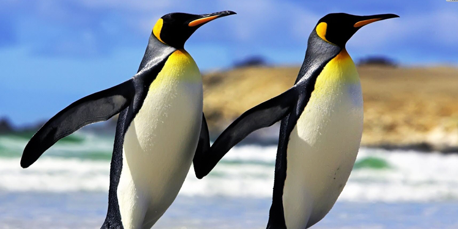

Emperor Penguin
AKA: Terre Adelie colony Scientific Name: Aptenodytes forsteri Family: Spheniscidae Species: A. forsteri Speed: 6 – 9 km/h in water Length: 110 – 130 cm Mass: 22 – 45 kg Wing Span: 76 – 89 cm Life Span: 20 – 50 years Location: Antarctica Diet: Fish. Also eats crustaceans and cephalopods.
Appearance:
: The adult has deep and black dorsal feathers. The ear patches are bright yellow. The chicks are typically covered with silver-grey down and have white masks and blackheads.
Facts
- It is a flightless bird.
- It breeds in the cold environment of any bird species.
- It is a social animal that lives in colonies with other fellow beings.
- It is an excellent swimmer.
- It is the deepest diving bird in the world. Known to dive to depths of more than 500 meters.